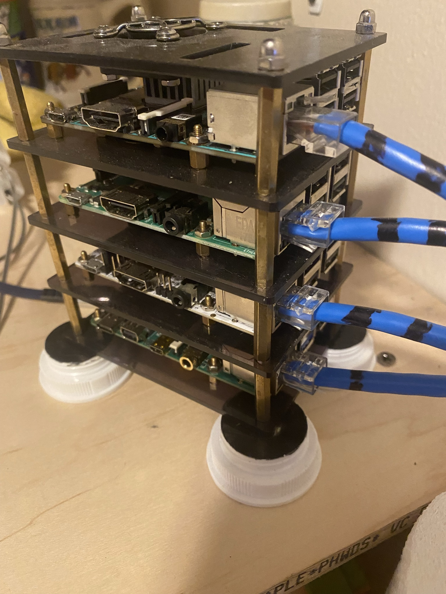

This example is intended to showcase my proficency with PC hardware. I selected the parts and assembled this Mini-ITX PC. Working with small form factors requires strong paitents, and a high level of presision.
This exhibit displays some of the network applicances that I have worked with. In addition to working hands on with equipment, I have developed several network simulations with Packet Tracer.
One of the big things that got me into working in this field is working with rack-mounted servers. I have configured my lab’s rack-mounted server in dozens of deployment scenarios with the Windows 2016 and 2019 Datacenter operating system. I also have deployed Microsoft Hyper-V Server and begun my initial configuration.
This topic needs to be dynamically addressed, and there is one specific element that makes the job of any security professional more complicated. That element lead me to use, and become a student of Sociology thereby guiding me various potential mitigation tactics, or an avenue for gathering intelligence on the threat actor.
